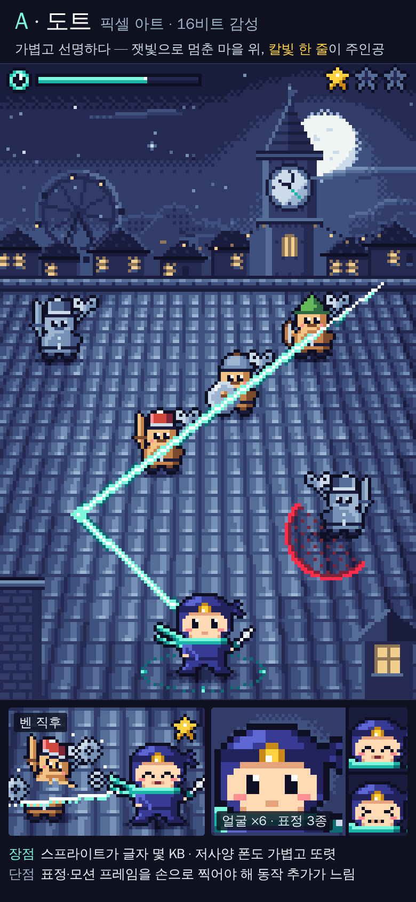
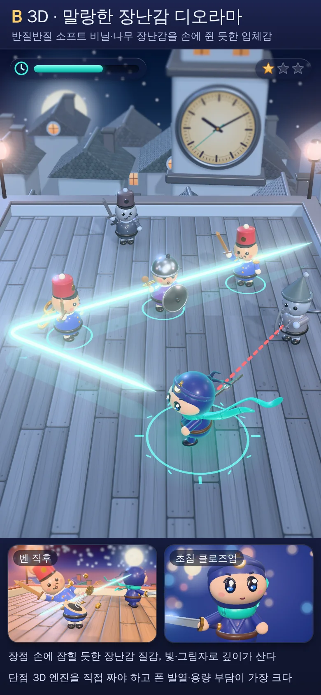
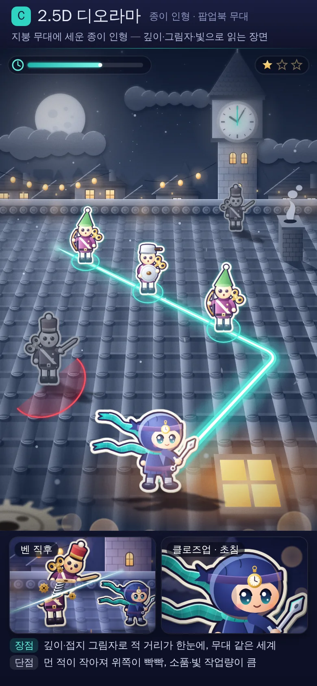
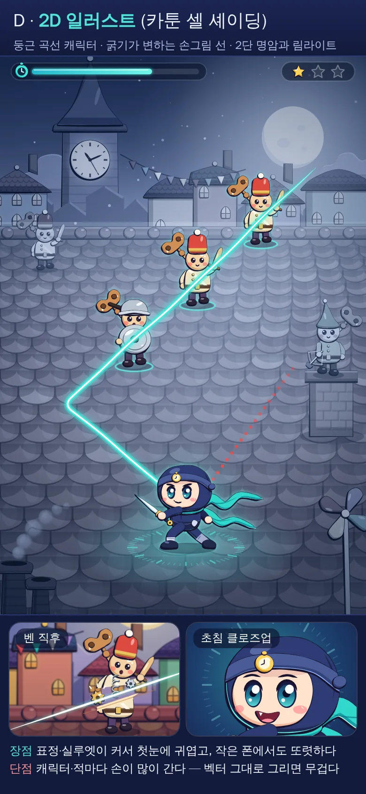
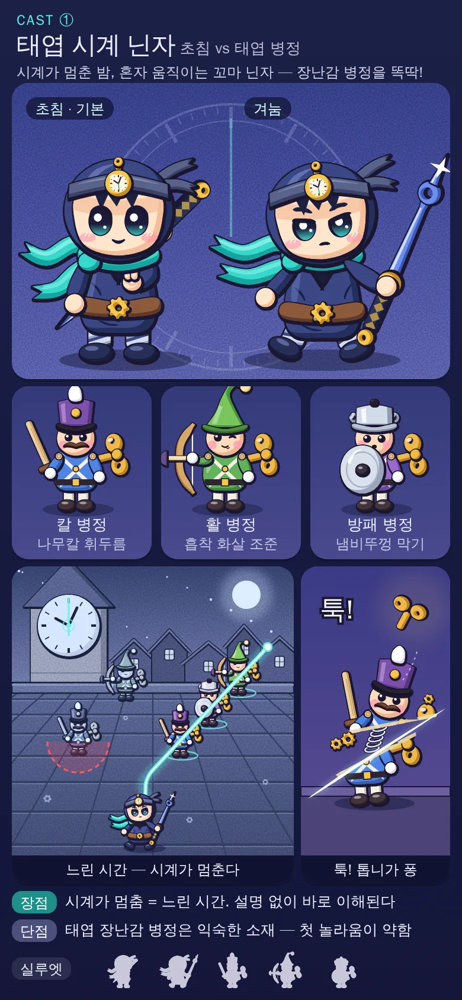
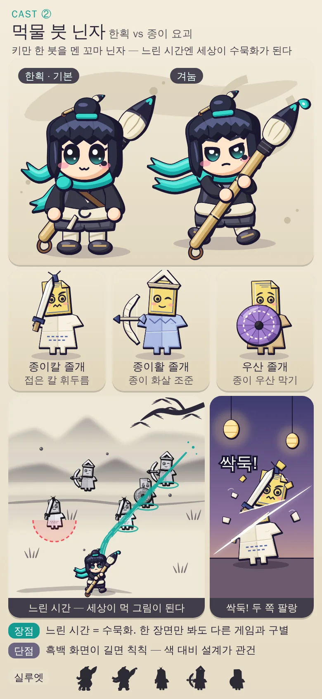
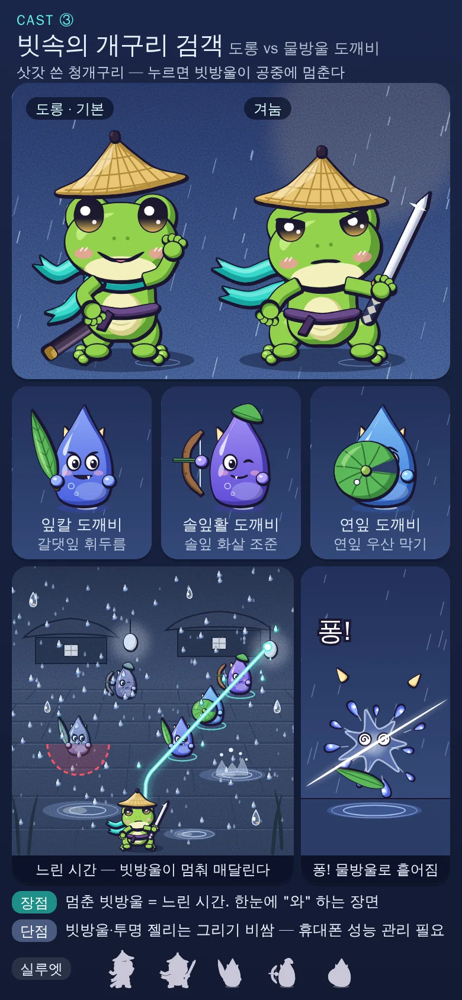

🥷 느린 시간 닌자 — 아트·캐릭터 시안 (M3 S1)
스타일 넷과 캐릭터 셋 가운데 마음에 드는 것을 하나씩 골라 주세요. 예: "C에 ②", "도트에 ③". 모든 그림은 외부 그림 없이 코드로 직접 그렸습니다.
1. 그림 스타일 — 같은 캐릭터(태엽 시계 닌자)를 네 가지로
모두 같은 순간입니다: 꾹 눌러 세상이 느려지고(청회색), 꺾어 그은 길이 적 셋을 꿰기 직전. 아래 작은 칸은 '벤 직후'와 주인공 얼굴입니다.

A · 도트 — 가장 가볍고 선명. 렉 걱정이 가장 적고 용량도 가장 작다. 동작마다 손으로 찍어야 해서 표정·동작 추가가 느리다.

B · 3D 장난감 — 손에 잡힐 듯한 질감. 대신 3D 엔진을 직접 짜야 하고(10~14사이클), 폰 발열·렉 위험과 용량이 가장 크다.

C · 2.5D 디오라마 — 팝업북 무대 위 종이 인형. 깊이·그림자로 거리가 읽힌다. 먼 적이 작아져 위쪽이 빡빡할 수 있다.

D · 2D 카툰 — 요즘 캐주얼 게임 같은 깔끔한 그림. 표정이 커서 작은 폰에서도 또렷하다. 그대로 매 프레임 그리면 무거워서 처음에 한 번 구워 쓴다.
2. 캐릭터 — 너구리 대신 세 가지
그림체는 셋 다 같게 맞추고 캐릭터만 바꿨습니다. 아래 '느린 시간' 칸이 캐릭터마다 다릅니다.

① 태엽 시계 닌자 — 꼬마 닌자 '초침' vs 태엽 장난감 병정. 시계가 멈춤 = 느린 시간이라 설명이 필요 없다. 소재는 익숙한 편.

② 먹물 붓 닌자 — 큰 붓을 멘 소녀 '한획' vs 종이 요괴. 느린 시간엔 세상이 수묵화, 한 획 베기 = 붓 한 획. 화면이 조용해져 연출이 가장 절제된다.

③ 빗속의 개구리 검객 — 삿갓 쓴 청개구리 '도롱' vs 물방울 도깨비. 누르면 빗방울이 공중에 멈춘다 — '와'가 가장 크다. 빗방울 수는 묶어서 렉 관리가 필요.
← 게임으로